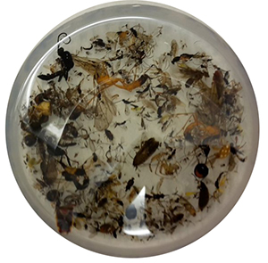

This project consist in the optimization of protocols for metabarcoding of insects from bulk samples or environmental DNA (eDNA), mainly soil samples. Marker and PCR primers selection is a key step in metabarcoding, and our research has a strong focus on this aspect, testing existing primers, and designing new ones when necessary, for diferent mitochondrial genes. We work on implementing a multilocus approach, combining several mitochondrial markers to overcome the taxon-specific biases that can exist for each marker individually. In the process we develop a pipeline for primer desing and metrics for evaluation that can be applied to any other taxonomic group.
Also, we focus on laboratory methods for non-destructive DNA extraction of bulk samples, trying to find the best protocol that effectiveley extracts DNA with the lower effect on the morphology of the specimens, so these can be afterwards examined morphologycally by taxonomists. Ideally, we will be able to point to a sample where potential new species might be found, knowing beforehand the taxonomic group to which it belongs, facilitating the work of expert taxonomists. This synergy between metabarcoding and taxonomy can speed up the discovery and description of new species, especially in a place like Sweden, where the insect biota is one of the best known and any unidentified barcode would represent an undescribed species. Testing different sequencing strategies (metabarcoding, mito-metagenomics (MMG), long-range PCR) is part of this method validation as well.
Finally, we take advantage of the great amount information produced during the metabarcoding pipeline to answer questions related to the ecology or origin of the insect faunas of the habitats where our samples come from. We collaborate with other groups interested, for example, on the biogeography of the Coleoptera of New Zealand and how the changes in the Cook Strait during the Pleistocene shaped the community composition of the two main islands.
People involved in this project: